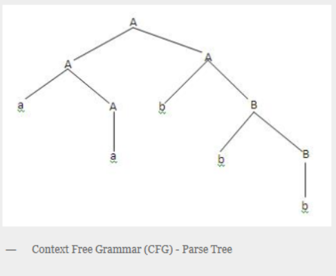
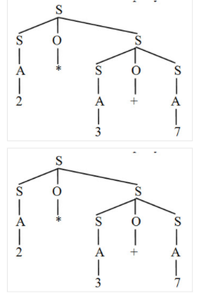

Apa itu Context Free Grammar ?
CFG atau Context Free Grammar adalah tata bahasa yang mempunyai tujuan sama seperti
halnya tata bahasa regular
yaitu merupakan suatu cara untuk menunjukkan bagaimana menghasilkan suatu untai-untai
dalam sebuah bahasa.CFG perlu disederhankan dengan tujuan untuk melakukan pembatasan
sehingga tidak menghasilkan pohon penurunan yang memiliki kerumitan yang tak perlu atau
aturan produksi tak berarti.
Context Free Grammar (CFG)/ Bahasa Bebas Konteks adalah sebuah tata bahasa dimana tidak
terdapat pembatasan pada hasil produksinya, Contoh Pada aturan produksi :
α → β
batasannya hanyalah ruas kiri (α) adalah sebuah simbol variabel. Sedangkan contoh aturan
produksi yang termasuk CFG adalah seperti di bawah :
B → CDeFg D → BcDe
Kemampuan CFG
Ada berbagai kemampuan CFG:
1. Tata bahasa bebas konteks berguna untuk mendeskripsikan sebagian besar bahasa
pemrograman.
2. Jika tata bahasa dirancang dengan benar maka pengurai yang efisien dapat dibangun
secara otomatis.
3. Dengan menggunakan fitur informasi asosiatif & prioritas, tata bahasa yang sesuai
untuk ekspresi dapat dibangun.
4. Tata bahasa bebas konteks mampu mendeskripsikan struktur bertingkat seperti: tanda
kurung seimbang, pencocokan awal-akhir, sesuai jika-maka-lain & seterusnya.
1. Parsing
Context Free Grammar ( CFG ) menjadi dasar dalam pembentukan suatu parser/proses
analisis sintaksis. Bagian sintaks dalam suatu kompilator kebanyakan di definisikan
dalam tata bahasa bebas konteks. Pohon penurunan ( derivation tree/parse tree) berguna
untuk menggambarkan simbol-simbol variabel menjadi simbol-simbol terminal setiap simbol
variabel akan di turunkan menjadi terminal sampai tidak ada yang belum
tergantikan.
Contoh, terdapat CFG dengan aturan produksi sebagai berikut dengan simbol awal S
:
S → AB
A → aA | a
B → bB | b
Maka jika ingin dicari gambar pohon penurunan dengan string : ‘aabbb’ hasilnya
adalah
seperti di bawah.
Proses penurunan / parsing bisa dilakukan dengan cara sebagai berikut :
Penurunan terkiri (leftmost derivation): simbol variabel terkiri yang di perluas
terlebih dahulu.
Penurunan terkanan ( rightmost derivation ) : simbol variabel terkanan yang
diperluas
terlebih dahulu.
Misal : Grammar sbb :
S → aAS | a
A → SbA | ba
Untuk memperoleh string ‘aabbaa’ dari grammar diatas dilakukan dengan cara :
Penurunan terkiri: S => aAS => aSbAS => aabAS => aabbaS => aabbaa
Penurunan terkanan : S => aAS => aAa => aSbAa => aAbbaa => aabbaa

2. Ambiguitas
Ambiguitas terjadi bila terdapat lebih dari satu pohon penurunan yang berbeda untuk
memperoleh suatu string. Misalkan terdapat tata bahasa sebagai berikut :
S → A | B
A → a B → a
Untuk memperoleh untai ‘a’ bisa terdapat dua cara penurunan sebagai berikut :
S => A => a
S => B => a
Contoh ambiguitas lain: Diketahui grammar G = {S → SOS|A , O → *|+, A → 0|1|2|…|9}
String : 2*3+7 mempunyai dua pohon sintaks berikut :
Sebuah string yang mempunyai lebih dari satu pohon sintaks disebut string ambigu
(ambiguous). Grammar yang menghasilkan paling sedikit sebuah string ambigu disebut
grammar ambigu.
